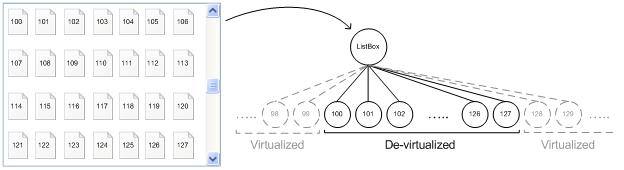

title: ItemContainer Control Pattern
description: Describes guidelines and conventions for implementing IItemContainerProvider, including information about methods. The ItemContainer control pattern is used to support item virtualization.
ms.assetid: 6f3dd94e-3563-4a13-9db9-5928a02bab77
keywords:
- UI Automation,implementing ItemContainer control pattern
- UI Automation,ItemContainer control pattern
- UI Automation,IItemContainerProvider
- IItemContainerProvider
- implementing UI Automation ItemContainer control patterns
- ItemContainer control patterns
- control patterns,IItemContainerProvider
- control patterns,implementing UI Automation ItemContainer
- control patterns,ItemContainer
- interfaces,IItemContainerProvider
ms.topic: article
ms.date: 05/31/2018
ItemContainer Control Pattern
Describes guidelines and conventions for implementing IItemContainerProvider, including information about methods. The ItemContainer control pattern is used to support item virtualization.
Controls that contain a large number of child items can use virtualization to efficiently manage the items. With virtualization, the control maintains full information in memory for only a subset of items at any given time. Typically, the subset includes only those items that are currently visible to the user. Full information about the remaining virtualized items is kept in storage and is loaded into memory, or realized, as the control needs it, for example, as new items become visible to the user.
For example, the following diagram shows a list box that contains thousands of virtualized items. Because the control maintains full information only for the child items that are currently visible, the provider can expose Microsoft UI Automation elements only for items 100—127.

Controls that use virtualization represent a challenge because only realized (de-virtualized) items are fully available as UI Automation elements in the UI Automation tree. Virtualized items do not exist in the tree, so information about them is not available.
To provide information about virtualized items, providers implement the ItemContainer control pattern, which exposes the IItemContainerProvider interface. The FindItemByProperty method finds child items based on the value of a particular property, such as Name, AutomationId, or IsSelected. If an item is virtualized, FindItemByProperty retrieves a UI Automation placeholder element for the item. A placeholder element is an implementation of the IRawElementProviderSimple interface that supports only the VirtualizedItem control pattern.
The IVirtualizedItemProvider::Realize method enables a client to request that a virtualized item be realized, thereby exposing a full UI Automation element for the item so that all required properties and patterns are available.
Although the primary purpose of the ItemContainer control pattern is to support virtualized container scenarios, it can be implemented by any container that retrieves child items by name, regardless of whether the container uses virtualization.
This topic contains the following sections.
Implementation Guidelines and Conventions
When implementing the ItemContainer control pattern, note the following guidelines and conventions:
- Any control that can contain virtualized items must support the ItemContainer control pattern. Any container that supports the retrieval of items based on a property value can support this pattern, regardless of whether the container uses virtualization.
- When a container is virtualized, other controls patterns such as Selection, Table, and Grid can be affected. For example, the ISelectionProvider::GetSelection method may support only elements that are in the viewport, or only selected elements that are currently not virtualized.
- The Scroll control pattern should be unaffected by virtualization.
- No item count or index information is available for virtualized items. A virtualized control can use the DescribedBy or the ItemStatus property to provide this information, if necessary.
- Control developers should document and publish details of all UI Automation properties and control patterns affected by the use of virtualization. Although the ItemContainer and VirtualizedItem control patterns offer basic support, they may not support some virtualization behaviors.
The following guidelines and requirements apply to the IItemContainerProvider::FindItemByProperty method.
- While not required, Microsoft highly recommends that FindItemByProperty support the Name, AutomationId, and IsSelected properties.
- FindItemByProperty can be slow if it needs to traverse multiple objects to find a matching one.
- FindItemByProperty can be called repeatedly to find items in sequence. The items can be in any order as long as each item is returned only once.
- FindItemByProperty may be implemented to find only those elements that appear in the control or content view of the UI Automation tree. Elements that appear only in raw view can be skipped to avoid retrieving multiple elements that represent only a portion of an "item" to the user.
- When the search criteria matches a virtualized item, the provider can return a placeholder element that supports the VirtualizedItem control pattern. The following guidelines apply to placeholder elements:
- Retrieving a placeholder element for a virtualized item must not cause UI changes.
- The placeholder element must be a peer of other child elements (a structure-changed event is required).
- When possible, the provider can create a full automation element instead of a placeholder.
- When the search criteria matches a non-virtualized element, the provider must return the actual element, not a placeholder.
- When no item is found, IItemContainerProvider::FindItemByProperty should set the pFound parameter to NULL and return S_OK.
- When the propertyId parameter is 0, the provider should return the next item after pStartAfter.
- If the pStartAfter parameter is NULL and propertyId is 0, the provider should return the first item in the container.
- When the propertyId parameter is 0, the value parameter is ignored.
The following guidelines and requirements apply to placeholder elements for virtualized items in the UI Automation tree.
- Although providers are encouraged to support more properties and control patterns for a placeholder element, only the VirtualizedItem control pattern is required.
- The provider can invalidate a previous placeholder element when IItemContainerProvider::FindItemByProperty is called again. (If a client needs to realize the placeholder element, it should do so immediately; otherwise, the element can be invalidated if FindItemByProperty is called again or if the viewport changes for whatever reason.)
- UI actions such as scrolling or resizing can cause the viewport of the container to change and a new set of child items to become visible. In this case, previously-retrieved placeholder elements may not be available in the UI Automation tree.
- The provider should not virtualize UI elements that are available on-screen in the viewport of the container object.
Required Members for IItemContainerProvider
The following method is required for implementing the IItemContainerProvider interface.
Â
The ItemContainer control pattern has no associated properties or events.
Related topics
Control Types and Their Supported Control Patterns
UI Automation Control Patterns Overview
UI Automation Tree Overview
VirtualizedItem Control Pattern
Â
Â